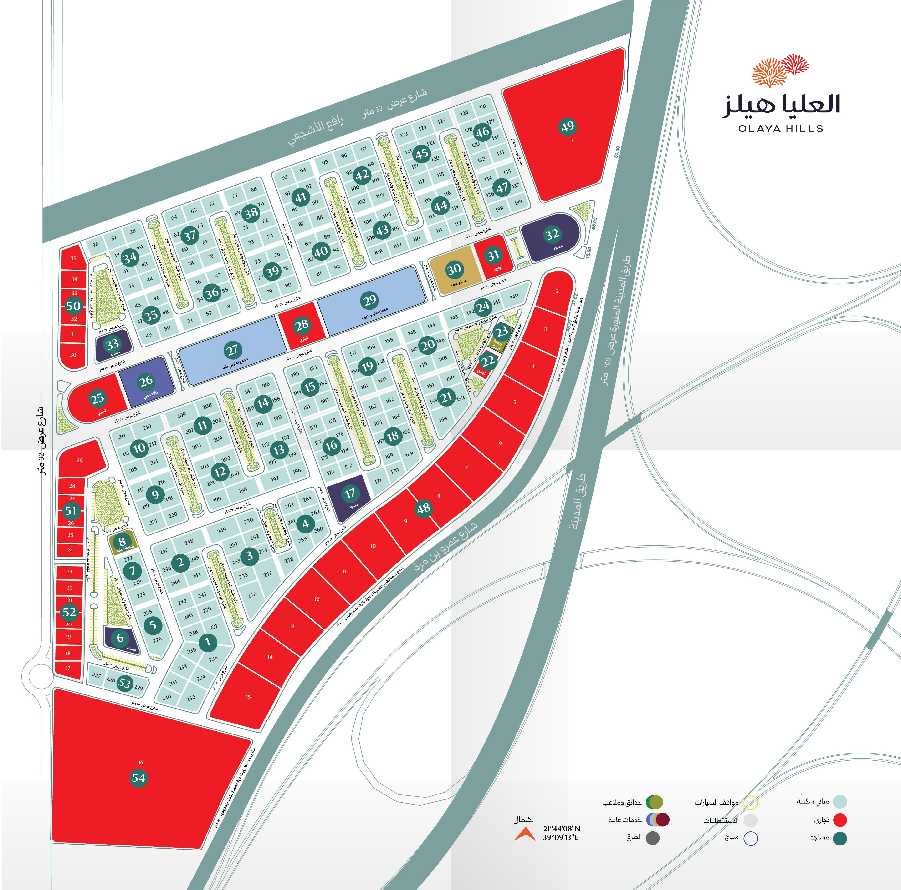

شركة العليا
مخطط العليا هيلز
حالة المخطط
0
بلوك مباع
0
بلوك سكني متاح
0
بلوكات تجارية متاحة
نسبة المباع
0%
0
قطعة متاحة للبيع بالقطعة
بلوكات البيع بالقطعة: بلوك
4
، بلوك
5
، بلوك
9
، بلوك
16
رمادي = مباع
اللون الطبيعي = متاح
✕
اضغط على أي بلوك لعرض تفاصيله، أو أي قطعة داخل بلوكات البيع بالقطعة

v1.0
✕